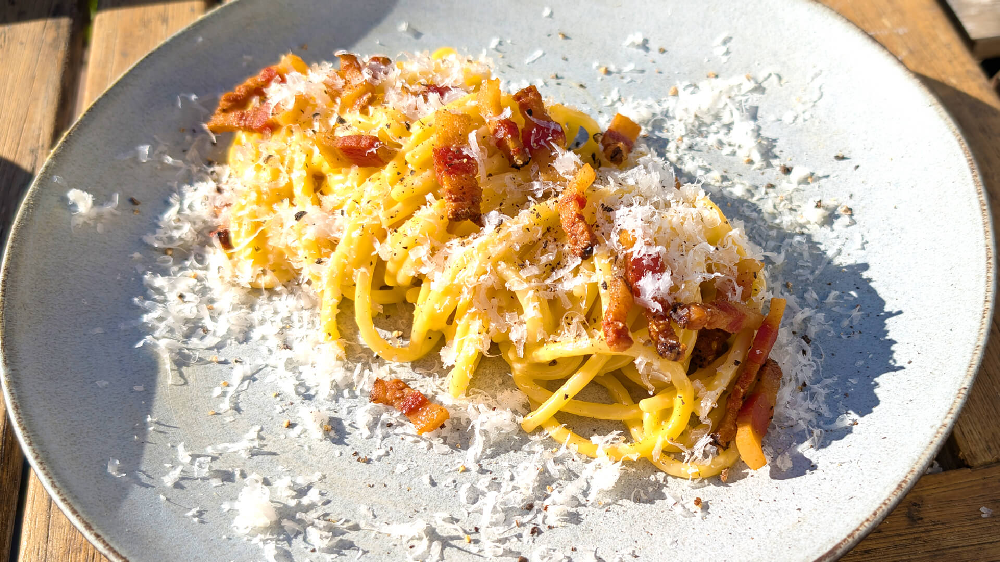

Cómo hacer una buena carbonara
Descripción del plato

La carbonara es una receta italiana originaria de Roma,
elaborada con pasta (generalmente espaguetis), y una salsa cremosa a base de huevo, queso pecorino (o parmesano), panceta o guanciale y pimienta negra. No lleva nata. Es un plato simple pero sabroso,
con un equilibrio perfecto entre cremosidad y sabor.
Ingredientes para la carbonara
- 200 g de espaguetis
- 100 g de guanciale o panceta
- 2 yemas + 1 huevo entero
- 50 g de queso pecorino romano (o parmesano) rallado
- Pimienta negra al gusto
- Sal
Pasos a seguir
- Cocina los espaguetis en agua con sal hasta que estén al dente.
- Mientras tanto, corta el guanciale en tiras y sofríelo en una sartén
sin aceite hasta que quede dorado y crujiente.
- En un bol, bate el huevo y las yemas, añade el queso rallado y bastante pimienta negra.
- Escurre la pasta (reserva un poco del agua de cocción).
- Mezcla la pasta caliente con el guanciale y luego con la mezcla de huevo y queso,
fuera del fuego (el calor de la pasta cocinará el huevo sin cuajarlo).
- Si queda muy espesa, añade un poco del agua reservada.
- Sirve con más queso y pimienta por encima.